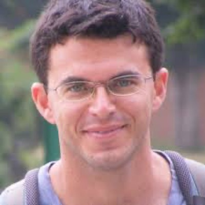
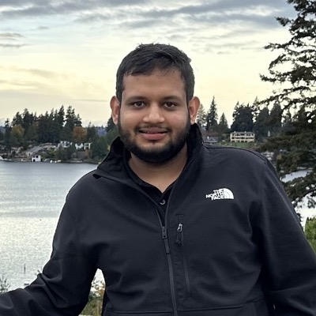
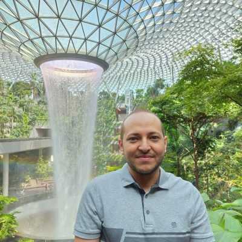

The team spans large-scale forecasting, temporal representation learning, scientific machine learning, generative modeling, and deployed AI systems.
Principal Applied Scientist, Amazon
Specializing in time-series forecasting, probabilistic modeling, and foundation models for temporal data. He is the lead author of N-BEATS and a pioneer of zero-shot time-series forecasting. His research focuses on large-scale forecasting systems within Amazon Supply Chain Optimization Technologies. Before Amazon, he held research positions at Unity Labs, Apple, and Element AI. He received his PhD in Electrical Engineering from McGill University.
Email·Scholar
Principal Research Scientist, Siemens Physical AI
Specializing in time-series forecasting, scientific machine learning, and physics-constrained foundation models. She received her PhD in Computational and Mathematical Engineering from Stanford University and spent nearly eight years at AWS AI, where she led the DeepEarth team on physics-informed machine learning for scientific computing. She previously co-organized the ICLR 2024 Workshop on AI for Differential Equations in Science.
Homepage·Scholar

Associate Professor, The Stein Faculty of Computer and Information Science, Ben-Gurion University of the Negev; Research Affiliate, ICSI
His research focuses on generative and representation learning for sequential data, including diffusion models, Koopman dynamics, and irregularly sampled time series. He has published at NeurIPS, ICML, ICLR, and SIGGRAPH, including recent work on generative temporal modeling and time-series learning under data scarcity.
Email·Scholar

Senior Applied Scientist, Amazon
Working on large-scale machine learning systems for finance automation and industrial AI applications. His research interests include time-series analysis, anomaly detection, representation learning, and foundation models for temporal data. His applied experience with scalable forecasting and temporal machine learning systems contributes an industry perspective to the workshop.
Email
Assistant Professor, School of Information and Communication Technology, Griffith University
Specializing in time-series forecasting, foundation models, and spatio-temporal data mining. He is the lead author of Time-LLM, Time-MoE, and TimeMixer++. He has authored over 70 publications with more than 7,000 citations and has extensive experience organizing workshops and tutorials at KDD, AAAI, and WWW.
Homepage·Email·Scholar

Assistant Professor of Computer Science, Khalifa University
Specializing in time-series representation learning, self-supervised learning, and temporal modeling under distribution shifts. He previously held a research scientist position at A*STAR, Singapore, and received his PhD from Nanyang Technological University. His work has appeared at ICML, NeurIPS, AAAI, and TPAMI, and he received the IEEE Engineering in Medicine and Biology Prize Paper Award in 2023.
Homepage·Email·Scholar
Chenghao Liu
Research Scientist, Datadog
Specializing in large-scale forecasting systems, anomaly detection, and machine learning for cloud infrastructure and observability platforms. His research focuses on robust temporal modeling under noisy and heterogeneous operational environments, with applications to monitoring and reliability systems.
Scholar
Research Scientist, Lawrence Berkeley National Laboratory; Group Lead, Deep Learning, ICSI
Working on methods for processing sequential data, with a particular interest in continuous-time formulations, state-space models, linear attention, and neural architectures inspired by dynamical systems. His work has appeared at ICML, NeurIPS, ICLR, and AISTATS. He previously co-organized the NeurIPS 2024 and ICLR 2026 Workshop on Foundation Models for Science.
Homepage·Email·Scholar